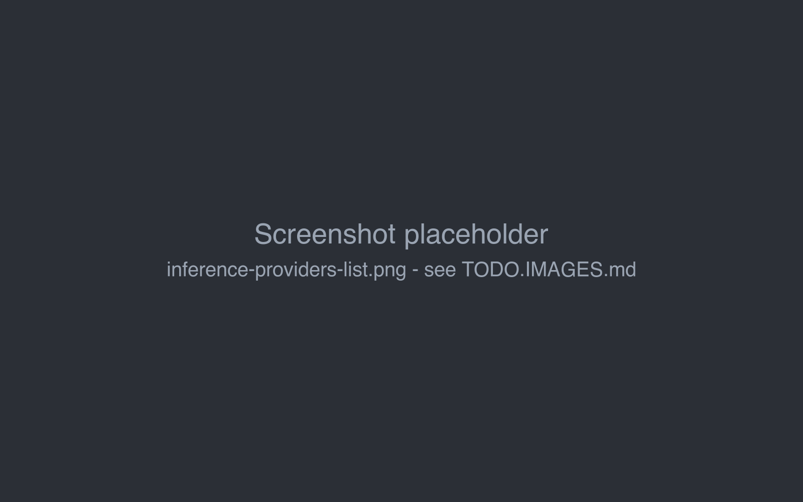
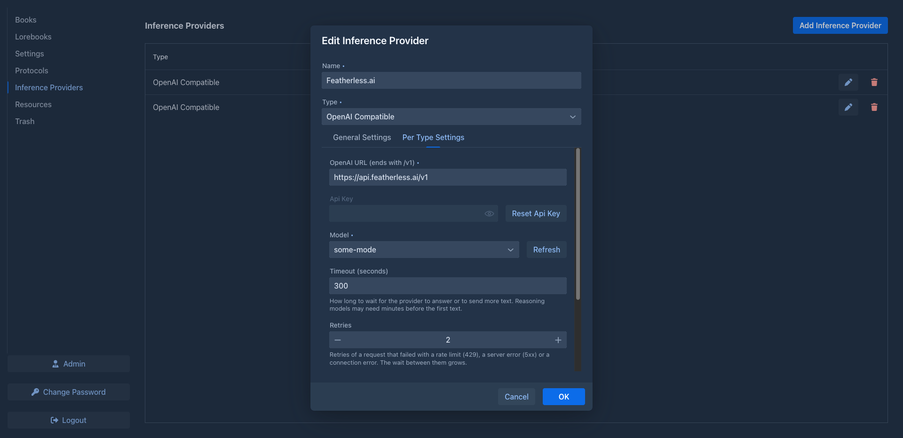
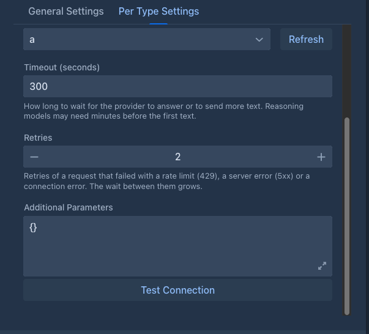
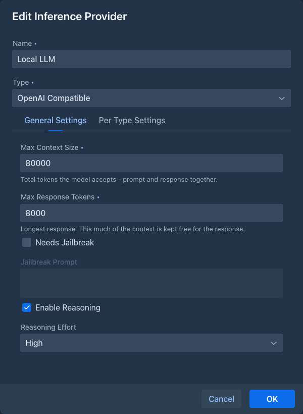
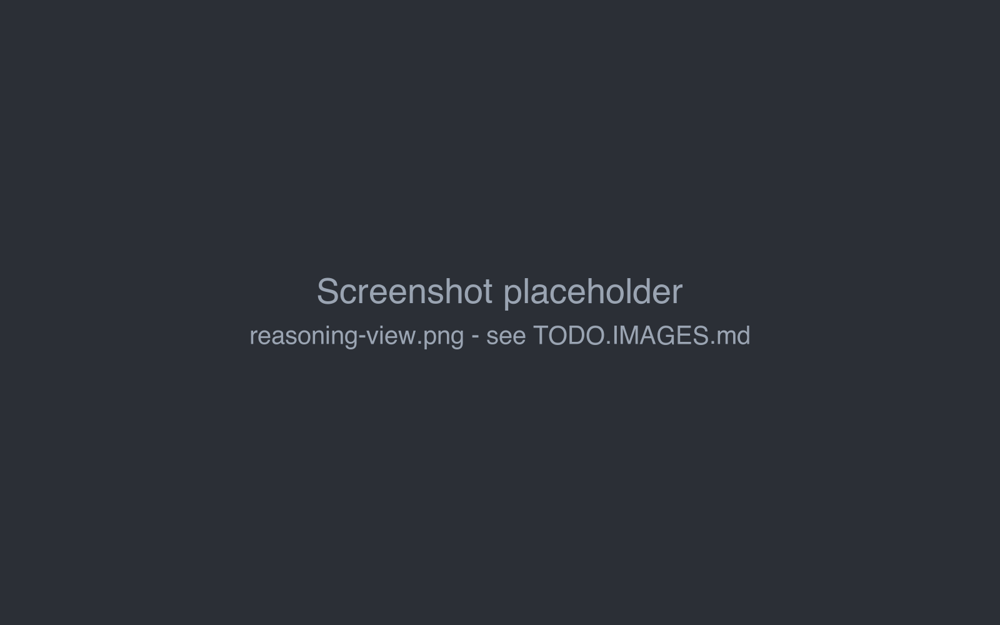

Inference providers
An inference provider is a connection to a model: the API address, the API key, the model and its limits. Every book uses one provider. You can have as many as you like, for example a large cloud model for the story and a small local one for experiments, and switch a book between them at any time.
Providers belong to your account. Other users don't see them or their API keys. API keys are stored encrypted (see The data folder).

Supported APIs
Marginalia works with any API that implements the OpenAI Chat Completions interface (/v1/chat/completions,
with streaming). Most services and local servers do:
The ports are the defaults of each server; use the ones your server actually runs on.
Port 8080
The Docker version of Marginalia uses port 8080 as well. If you run llama.cpp on the same machine, start it on another
port (llama-server --port 8081).
With the Docker version, localhost means the Marginalia container. Use
http://host.docker.internal:<port>/v1 for a model server on the same machine, see
Models on the same machine.
Adding a provider
Open the Inference Providers tab and click Add Inference Provider. Existing providers are edited with the pen button and deleted with the trash button.
At the top of the dialog:
Per Type Settings

The tab is taller than the dialog and scrolls. The lower fields:

When you edit an existing provider, the API key is not shown again. It is kept as it is unless you click Reset Api Key and enter a new one.
Refresh asks the API for its model list (/v1/models) with the URL and key from the form. If it fails with
Failed to download model list, check the URL (it must end with /v1), the key, and that the server is running.
Some services don't list models; type the model ID instead.
Test Connection checks the values in the form without saving: it asks the API for its model list and then for a
one-token answer from the selected Model, without retries. A success message means the URL, key and model work
together. A failure names the cause (see
General Settings

Marginalia keeps Max Response Tokens of the context free for the response and fills the rest with the prompt: templates, lorebook entries and summaries are counted in, and the oldest parts of the story that don't fit are left out. With a context of 32 000 tokens and responses of up to 2 000 tokens, the prompt gets 30 000 tokens.
Take Max Context Size from the documentation of the service, and set it a little lower: token counts are not always exact, and a request that exceeds the real limit fails. A protocol can override both limits for some books.
Error messages
When the API refuses a request, Marginalia says what to fix instead of showing an internal error, followed by what the API itself said:
Warning before sending
Marginalia fills the context only up to Max Context Size minus Max Response Tokens. If the finished prompt is still bigger than that (for example because an extension added text, or the token count was off), a warning shows the estimated sizes before the request is sent. The request is sent anyway; the API may reject it or cut the prompt.
Reasoning models
Reasoning models think before they answer. With Enable Reasoning checked, Marginalia sends the chosen
Reasoning Effort (None, Low, Medium or High) to the API as reasoning_effort. More effort usually means
better planned text, but slower and more expensive responses. Not every API supports the parameter; if requests
fail with reasoning enabled, turn it off.
When the model returns its reasoning (as reasoning_content or reasoning, depending on the server), it is shown
above the generated part under View Reasoning. The reasoning is not part of the story and is not sent back to the
model.

Reasoning counts toward the response: give reasoning models a larger Max Response Tokens, or the text may be cut off after a long reasoning.
Token counting
Marginalia counts tokens to decide how much of the story fits into the prompt. It asks the provider when it can, and tries these methods in order:
- the OpenAI token counting endpoint (
/v1/responses/input_tokens), - the
/tokenizeendpoint of llama.cpp, - the
/tokenizeendpoint of LiteLLM, - the
/v1/messages/count_tokensendpoint of LiteLLM (for Anthropic models), - a local estimate with the OpenAI tokenizer.
The first method that works is used from then on. The local estimate is close for most models but not exact, which is another reason to keep Max Context Size a little below the real limit.
Using a provider in a book
Each book has its model in the Model field of its About tab. To use a provider for all new books, select it as Default Model in the Settings tab. Changing the provider of a book takes effect with the next generated part; parts written before stay as they are.